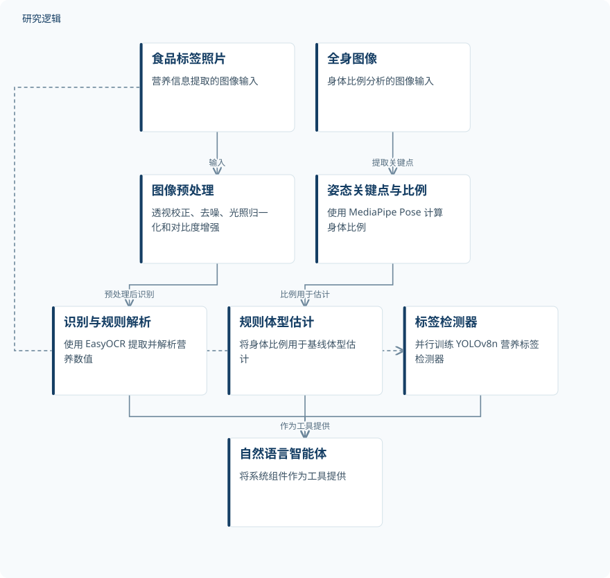

摘要解读
BodySync AI：用于营养标签提取与基于姿态的身体分析的多模态智能体系统
BodySync AI: A Multimodal Agentic System for Nutrition Label Extraction and Pose-Based Body Analysis
解读更新 2026-11-27 23:02 · 依据公开摘要整理，未核验全文细节
如何让一个系统同时读取食品营养标签、分析身体比例，并通过自然语言提供访问入口？BodySync AI 将图像处理与大语言模型智能体组合成原型，为理解多模态工具如何协同提供了一个具体案例。
文章目录
从食品标签到身体比例的两个任务
BodySync AI 是一个多模态卡路里追踪原型，结合光学字符识别、目标检测、姿态估计和智能体式大语言模型。系统面向两类输入：食品包装标签照片与全身图像，分别用于提取营养数值和分析身体比例。
识别、检测与姿态工具如何组合
营养信息提取先进行透视校正、去噪、光照归一化和对比度增强，再使用 EasyOCR 和基于规则的解析，提取卡路里、脂肪、碳水化合物及蛋白质信息。
与此同时，研究者使用 Open Food Facts Nutrition Table Detection 数据集训练 YOLOv8n 营养标签检测器，通过 14 次受控运行研究训练轮数、学习率、优化器、批量大小和输入分辨率的影响。
身体分析使用 MediaPipe Pose 关键点计算归一化肩宽、臀宽、躯干长度和肩臀比，并据此进行基于规则的基线体型估计。由 Groq 托管的 Llama 3.1 8B 智能体则通过自然语言界面，将这些组件作为工具提供。
依据摘要整理的双任务与智能体工具示意


仅概括摘要明确描述的输入、处理与工具关系，不表示未报告的调用顺序或实验结果。
下载 SVG图示关系说明
实线表示相邻阶段的信息流，虚线表示跨阶段联系或反馈。
食品标签照片 → 图像预处理：输入；图像预处理 → 识别与规则解析：预处理后识别；全身图像 → 姿态关键点与比例：提取关键点；姿态关键点与比例 → 规则体型估计：比例用于估计；食品标签照片 → 标签检测器：标签检测；识别与规则解析 → 自然语言智能体：作为工具提供；规则体型估计 → 自然语言智能体：作为工具提供；标签检测器 → 自然语言智能体：作为工具提供
检测器在验证集上的报告结果
摘要报告，最佳检测器配置在验证集上的 mAP@50 为 0.904，mAP@50-95 为 0.727。这是营养标签检测器的结果，不能直接代表营养数值提取、体型估计或整个系统的准确程度。
作者介绍了已构建的系统并报告检测器实验；摘要同时将相关评估和基于学习的身体成分模型列为未来工作，而非已完成成果。
摘要尚不能回答哪些验证问题
摘要未报告数据集的样本规模、验证集构成，也未给出不同配置的逐项比较结果，因此仅凭摘要无法判断结果对不同标签、拍摄条件或人群的适用范围。
摘要也未给出营养提取和身体分析的具体评估指标，无法据此判断两项任务及自然语言交互的实际表现；这并不意味着论文一定没有开展相关分析。
阅读启发：关注智能体与工具的验证边界
阅读启发：这个原型值得从“智能体如何调用专门工具”与“各工具的结果如何验证”两个层面理解。进一步阅读时，可关注检测器配置之间的比较，以及营养提取、身体分析和系统整体评估的具体范围。
以上为本站阅读启发与建议，不是论文已验证的结论。